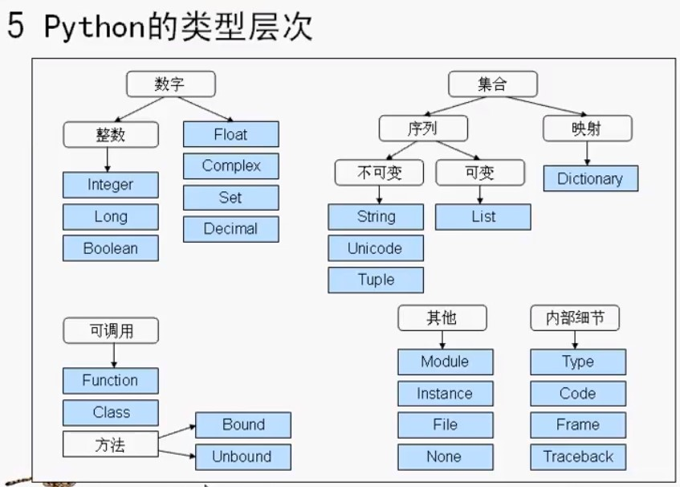

3引用VS拷贝 Python中，在传递大型对象时如果的确需要持贝，那么可以明确要求。 1.没有限制条件的分片表达式能够复制序列 2.字典copy方法能够复制字典 3.有些内置函数（例如1ist）能够生成持贝（list（L）） 4.copy标准库模块能够生成完整持贝
4比较、相等性和真值 所有的Python对象也可以支持比较操作一测试相等性、相对大小等。Python的比较总是检查复合对象的部分，直到可以得出结果为止。事，当嵌套对象存在时，Python能够自动遍历数据结构，并从左到右递归地应用比较，要多深就走多深。 ·“==”：操作符测试值的相等性。（递归地比较所有内嵌对象） ·“is”：表达式测试对象的一致性。（试二者是否是同一个对象，检查内存地址）
一般来说，在Python不同的类型的比较方法如下： ·数字通过相对大小进行比较。k ·字符串是按照字典顺序，一个字符接一个字符地对比进行比较。 ·列表和元组从左到右对每部分的内容进行比较。·字典通过排序之后的（键、值）列表进行比较。

>>> l = [1,2,3]
>>> x = l *2
>>> y = [l]*2
>>> y
[[1, 2, 3], [1, 2, 3]]
>>> l[1]=0
>>> y
[[1, 0, 3], [1, 0, 3]]
>>> x
[1, 2, 3, 1, 2, 3]